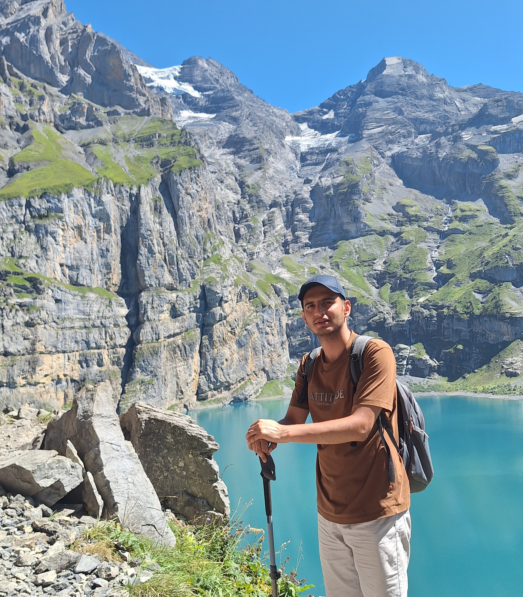
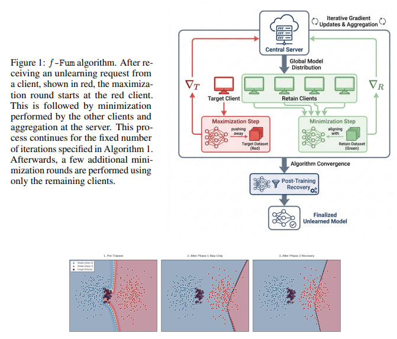
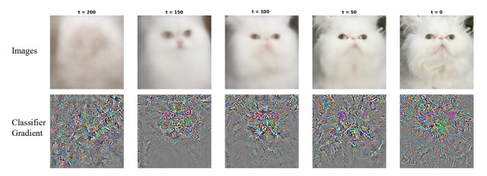
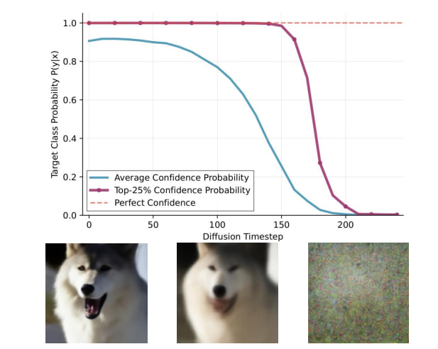
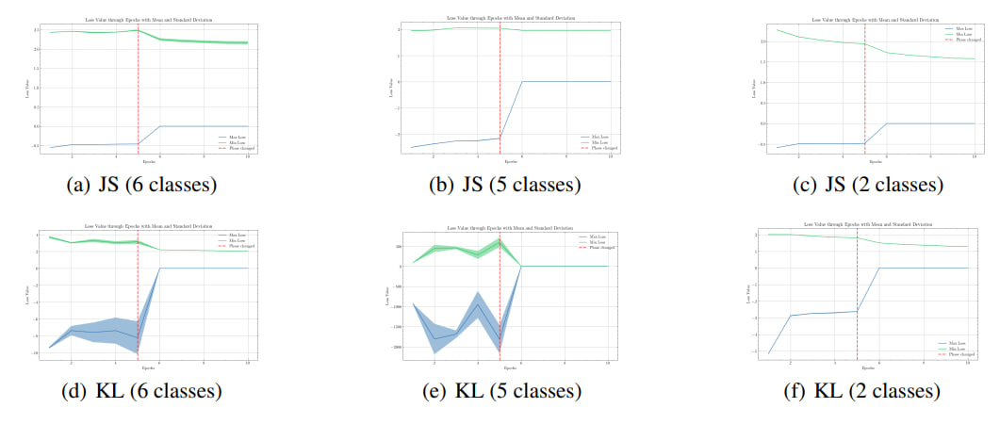
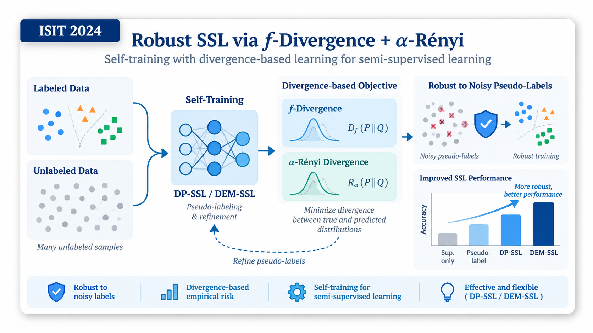
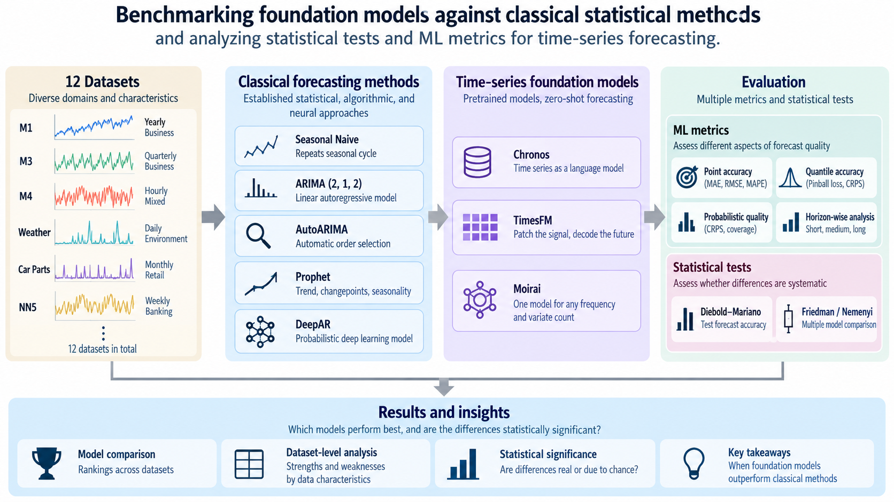
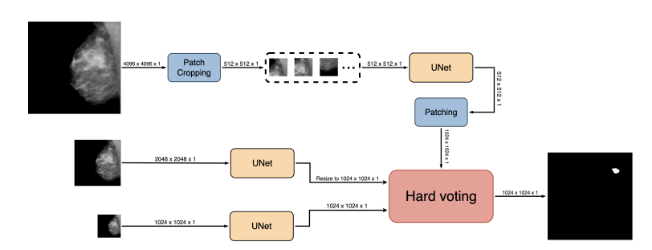

Amirhossein Bagheri
I am an M.Sc. student in Computer Science & Engineering at Politecnico di Milano. Before that, I received my B.Sc. in Computer Engineering from Sharif University of Technology, where I worked on semi-supervised learning for medical image segmentation.
My research interests are in machine learning theory, especially reinforcement learning and optimization. I am also interested in robustness and robotics.
I have worked on machine unlearning, robust semi-supervised learning, and diffusion model guidance, with collaborations involving Sharif University of Technology and The Alan Turing Institute.
Research Interests
In a nutshell, I am interested in Machine Learning Theory, with a particular focus on:
- Reinforcement Learning & Optimization: theoretical foundations for learning and decision making.
- Robustness: robust learning, machine unlearning, and semi-supervised learning under noisy pseudo-labels.
- Robotics: learning-based methods for reliable autonomous systems.
Education
- M.Sc. in Computer Science & Engineering, Politecnico di Milano, 2025 - present.
- B.Sc. in Computer Engineering, Sharif University of Technology, 2019 - 2024.
News
- [2026] Our paper on federated unlearning is available as an arXiv preprint and is currently under review.
- [2026] Our paper on information-theoretic regularization for classifier-guided diffusion appeared at ISIT 2026.
- [September 2025] Started my M.Sc. in Computer Science & Engineering at Politecnico di Milano.
- [September 2025] Awarded the MAECI Scholarship by the Italian Ministry of Foreign Affairs.
- [2025] Our paper on diffusion model guidance appeared at the NeurIPS Workshop on Structured Probabilistic Inference & Generative Modeling.
- [2025] Our paper on f-SCRUB appeared at the ICLR Workshop on Data Problems for Foundation Models.
- [2024] Our paper on semi-supervised learning under self-training appeared at the Tiny Papers Track at ICLR.
- [July 2024] Our paper on robust semi-supervised learning appeared at ISIT 2024.
- [July 2024] Graduated from Sharif University of Technology.
Publications
-

arXivarXiv preprint arXiv:2602.06187, 2026PDF Project Page Under Review -

ISITIEEE International Symposium on Information Theory (ISIT), 2026 -

NeurIPS-WNeurIPS 2025 Workshop on Structured Probabilistic Inference & Generative Modeling, 2025 -

ICLR-WICLR 2025 Workshop on Navigating and Addressing Data Problems for Foundation Models, 2025 -
 ICLR Tiny
The Second Tiny Papers Track at ICLR, 2024
ICLR Tiny
The Second Tiny Papers Track at ICLR, 2024 -

ISITIEEE International Symposium on Information Theory (ISIT), 2024
* Equal contribution.
Highlighted Projects
-

AIRICBenchmarking foundation models against classical statistical methods and analyzing statistical tests and ML metrics for time-series forecasting. -
Online Learning in Serverless ComputingSimulation study for online hyperparameter tuning in graph-based serverless applications.
-

ThesisWeakly supervised labeling and semi-supervised segmentation for breast mammograms.
Work Experience
- Machine Learning Engineer, RSO Company, Tehran, Jul. 2024 - Oct. 2025.
Deployed LLMs in production, worked on large-scale graph data, and developed MLOps pipelines for training, deployment, and monitoring. - Lung X-ray Segmentation Research Intern, CommaMed Startup, Science and Technology Park, Sharif University of Technology, June 2022 - Sept. 2022.
Worked on ResUNet-based lung segmentation and semi-supervised methods for robustness to distribution shift.
Teaching
- Teaching assistant/project supervisor for Differential Privacy, Signals and Systems, Probability and Statistics, Linear Algebra, Artificial Intelligence, and Design Algorithm at Sharif University of Technology.
Activities
- Polimi Data Scientists, Event Team Member, 2025 - present.
Powered by Jekyll and Minimal Light theme.